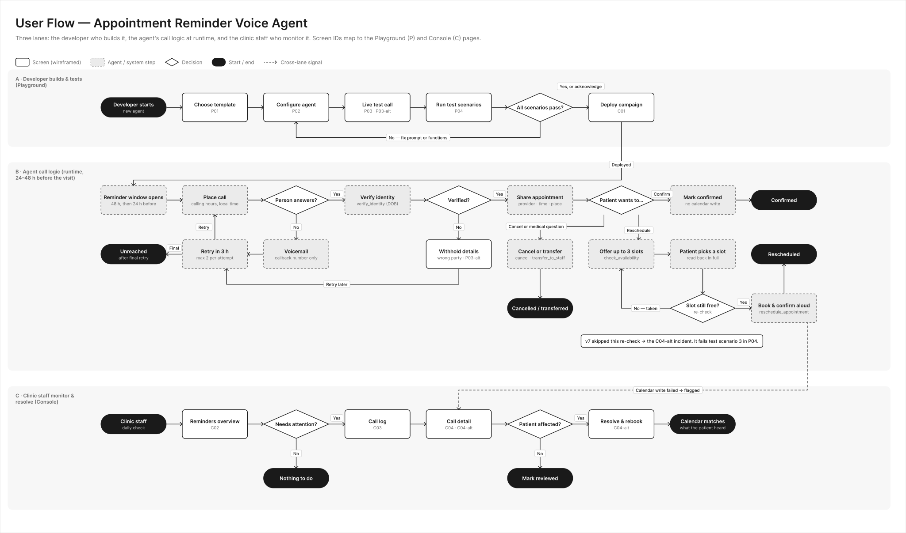

Design Notes
Type scale, system rules and the reasoning behind the 10 screens. Written to support a 25 minute walkthrough.
How To Review This Prototype
Every screen is a real page and the links between them follow the user flow. The left nav has three controls that change how you read it.
Left Nav Controls
- Playground / Console
- Switches product and its screens
- Fidelity: Low / High
- Low is the kit's pure grayscale. High adds color.
- Brief Annotations
- Shows the numbered notes from the brief on each screen
- Reset Demo
- Puts every resolved call back in the queue
Suggested Walkthrough Path
User Flow
One failure travels the whole flow. The agent skips the re-check before booking, scenario 3 in P04 fails, the team can still deploy after acknowledging, and the failure shows up as C04-alt in Console.

Type Scale
Inter for language and Roboto Mono for machine strings. Seven text styles plus one mono style. All sizes and line heights are even pixels. Weight does most of the work, so the scale stays small.
When To Use Monospace
The test is origin. If a machine produced the text and a developer might copy, compare or search it, it is mono. If a person said or wrote it, it is sans. If Teresa has to read it to understand the story, it is sans. If Sam has to match it against logs, it is mono.
Mono
Sans, even when it looks technical
Risk this rule accepts: a timestamp can be machine data or a date people act on. The test is who needs to match it against what.
Where The Eye Goes
For each screen, what reads first, second and third, and the lever used. Size and weight lead. Position follows. Color only confirms what form already says.
Color Logic
Form carries the meaning and color confirms it. Every status has text and a distinct shape, so Low fidelity reads the same story in pure grayscale. Color is used for state and for the one thing that needs a person.
Contrast, Computed From The Tokens
Checked by calculation only. I have not run a screen reader or an automated audit, and that is the first thing I would add.
Kit Components And What I Changed
Buttons, badges, chips, fields, toggles, tabs, nav items, metric cards, bubbles, function blocks, variable chips, the waveform and annotation markers come straight from the Wireframe Kit, with its radii and fills. ChatKit supplied the app shell, page headers, hairlines and the transcript-plus-rail layout.
Deviations From The Kit
Derived From Kit Borders And Radii
Answers To The Brief's Questions
How do speech turns, function calls and guardrail events differ in weight?
Speech is the spine: bubbles at body size, agent in gray fill and patient in white. Function calls are dashed, mono and inset 16px, so they read as events beside the conversation. Guardrail events live in the rail and as a calm banner, never in the spine.
On C04-alt, what is read first: the mismatch, the moment in the call, or the fix?
The mismatch, stated as a sentence a non-technical person can act on. The fix card is sticky beside the evidence so the decision never scrolls away.
Five KPIs on C02: what leads for a clinic, and what for a developer?
The clinic leads: no-show rate at 40px. The developer's call outcomes step down to 28px, and the one that matters to both, writes that failed, carries an alert badge.
How does "what the agent did not say" (P03-alt) become legible?
A short list of struck-through placeholders with "Not said" and a check, plus a banner that names what was withheld. A list is the right form because the items are discrete and the reviewer is counting.
Where do masked PHI and low-confidence words need emphasis, and where should they recede?
Masked values are mono and quiet by default, with a logged reveal. Low-confidence words get a dotted underline and a caption only on dates and times, where an error changes a calendar.